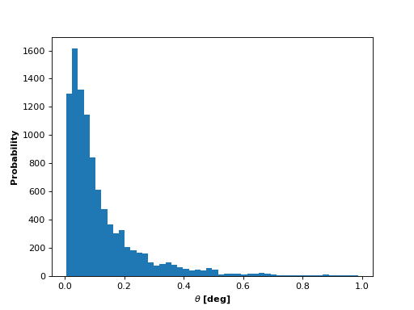
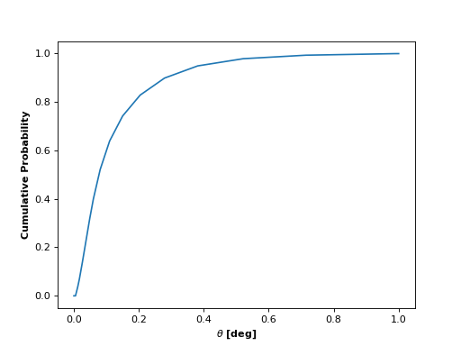

theta.py ¶
This module enables sampling from the \(\theta\) distribution for the TRAPPIST-1 planets derived using the Monte Carlo method described in the paper. \(\theta\) is the polar angle of the angular momentum vector; we assume all planets in the TRAPPIST-1 system have angular momentum vectors with polar angle drawn from this distribution.
-
planetplanet.photo.theta.sample()¶ Draw a sample from the distribution of polar angle of the angular momentum vector, \(\theta\), computed using the Monte Carlo technique discussed in the paper.

-
planetplanet.photo.theta.CDF(theta)¶ Returns the value of the cumulative distribution function (CDF) of the polar angle of the angular momentum vector, \(\theta\).
